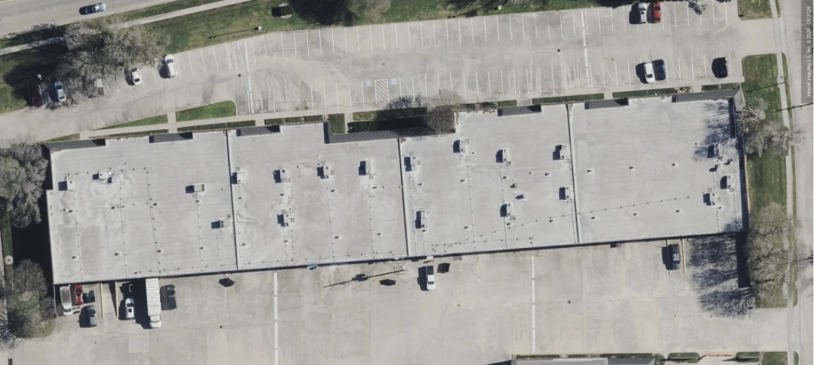

Adaptive Reuse
Got money? Don't know what to do with it? Try Helix
HELIX
Built by three.
Over one weekend.
Over one weekend.
Vexcel / exterior imageHouston, TX

Starting capital
$900,000
Hardy Road · Veterinary clinic
Opening costs$406,940
Reserve$50,000
Headroom$443,060
Inside the opening costInspect a component
Saved decision / Hardy Road15 Nov 2026
Proceed to
diligence.
Veterinary clinic
Base cash to open$406,940
Reserve held$50,000
Modeled headroom$443,060
10 of 26 uses cleared all gates. Six diligence items remain open. Saved screening & cash-runway result; not a profitability forecast.